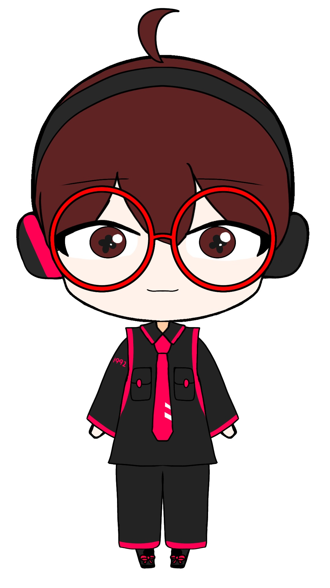
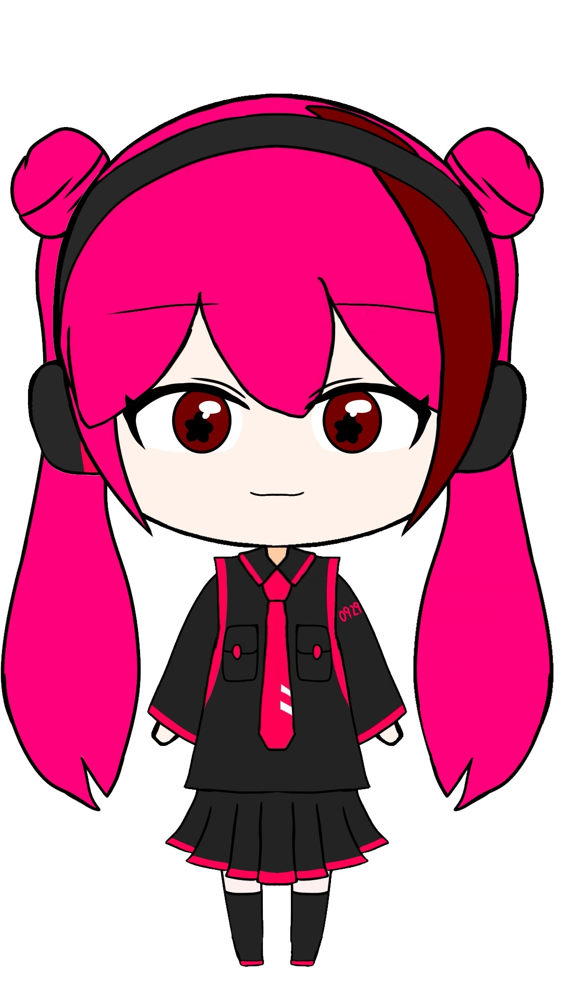
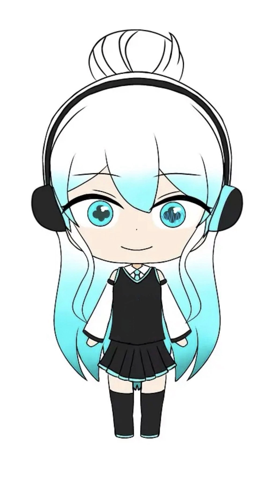

NEWS
-
2026.10.27
正弦波ジャック【JPN&ENG】（ver-1.0.4）配布開始！前バージョンより全ての母音が聞き取りやすくなりました！
正弦波くんのWindows専用オリジナルカーソルの配布も開始しました！利用規約はUTAU音源と変わりません。 -
2026.10.22
サイトを一部改修しました。
各キャラクター（正弦波ジャック・虚音セイ・正幻波ナノカ）の立ち絵素材等をまとめたZIPファイルの配布を規約ページにて開始しました！ -
2026.10.18
サイトを一部改修しました。
普通頭身バージョンのイラストを各キャラクター紹介ページに掲載しました。 - 2026.10.16 🎂正弦波ジャックくんのUTAU音源配布開始から１周年！
正弦波ジャック（正弦波くん）
zipのままOpen UTAUへD&D！
UTAU本体は解凍してUTAUのvoiceフォルダへ！
⚠本UTAU音源はUTAletには非対応です！
加算合成音声のため、モゴモゴした声と発音が特徴です。
🎵 音声サンプル：きらきら星



⚠️ 利用規約・AI生成について ⚠️
AI生成は自由ですが、ネット上への公開は禁止です。個人的に楽しんでね！
詳しい規約とダウンロード →